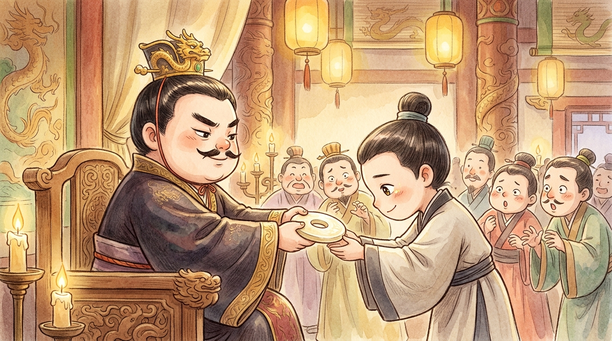
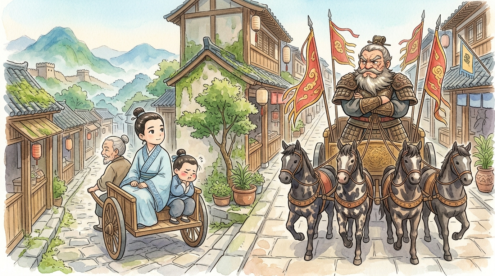
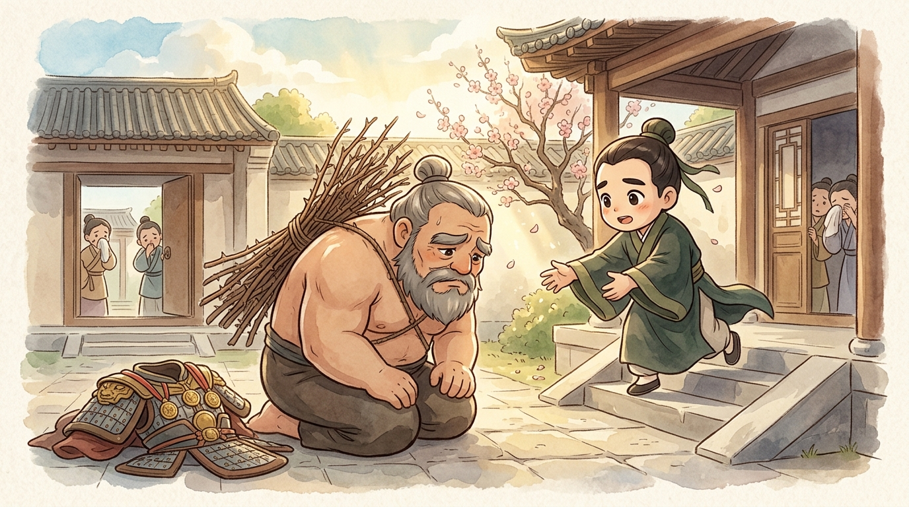

🎭 The stage is dark. A single light rises on a small table, and on the table: a disc of white jade (玉) that seems to glow from inside — the Heshibi (和氏璧), most famous treasure (寶物) of the age.1 The audience leans in. Somewhere offstage, a bully king is writing a letter…
🎭 ACT ONE: The jade returns whole (完璧歸趙)
SCENE 1 — The court of Zhao (趙). Ministers pace in panic, waving a letter with a huge red seal.
The letter is from the King of Qin (秦), the strongest and scariest state in all the Warring States.2 It reads, sweetly: "I hear Zhao has the Heshibi jade. I offer FIFTEEN CITIES in exchange. Do send it over." The court sees the trap at once. Hand over the jade, and Qin will simply... not pay. Fifteen cities, honestly! But refuse, and Qin has an excuse to attack: "Zhao insulted us!" Give and lose, refuse and lose. (A minister faints. Another fans him with the letter.)
Then a court officer clears his throat: "My servant Lin Xiangru (藺相如) is... unusually clever." The king looks at this unknown young man, who bows and says: "If Qin gives the cities, I leave the jade. If Qin cheats — I promise to bring it home without a scratch (完璧歸趙). Send me." The court gasps at the nerve. The king, out of better ideas, agrees.
SCENE 2 — The palace of Qin. Golden, enormous, designed to make visitors feel like beetles.
Lin Xiangru presents the jade. The King of Qin turns it in the light, beams, passes it to his ministers, his guards, his favourite courtiers — everyone coos over the treasure. Time passes. Cities mentioned: zero. Maps produced: zero. Lin Xiangru watches, counts, and steps forward with a polite little bow: "Your Majesty, the jade has one small flaw. Permit me to point it out." The king, alarmed for his prize, hands it straight back.
(The audience holds its breath — for there is no flaw.) The moment the jade touches his hands, Lin Xiangru takes three quick steps back until he stands against a great palace pillar. His voice changes from silk to stone: "Great King. Zhao fasted five days and held ceremonies to send you this treasure with honour. You pass it around like a party snack and speak not one word of payment. I see now there will be no cities. Very well — the jade and my head can shatter together on this pillar!" He raises the jade high, eyes on the pillar. (Gasps! The king lunges forward!)

"Wait! WAIT!" cries the King of Qin, who wants the jade very much un-shattered. He summons maps, points vaguely at fifteen cities, and promises everything. But Lin Xiangru has counted the king's blinks and believes precisely none of it. "Then Your Majesty will surely honour Zhao's ceremony: fast for five days, and receive the jade with the grandest ritual. Then it is yours." The greedy king, seeing no way to refuse politely, agrees — and Lin Xiangru bows himself out.
(That very night: a servant in plain clothes slips out of the guesthouse, through the back gate, onto the northern road. Inside his rough bundle, wrapped in old cloth: the most famous treasure in China, riding home to Zhao.)
SCENE 3 — Five days later. The King of Qin, freshly fasted and magnificently robed, receives... an empty-handed Lin Xiangru, who bows deeper than ever: "The jade is home in Zhao. Qin has a long history of, forgive me, creative accounting with its promises — so I sent it ahead. If Your Majesty truly means to trade, send the fifteen cities first; Zhao will deliver the jade the same day. And if I have offended you — the pot of boiling oil is right there, and I am at your service." (A long, dangerous pause…) And then the King of Qin — laughs. Killing this fearless man would win Qin nothing but shame, and every state would hear of it. He sends Lin Xiangru home with honours, cities unpaid, jade unwon.3
Curtain. Applause. In Zhao, the nobody is promoted to high minister.
🎭 ACT TWO: The thorn branch (負荊請罪)
SCENE 1 — Zhao, some years later. Enter LIAN PO (廉頗), Zhao's greatest general, in magnificent armour, followed by veterans of a hundred battles.
Lin Xiangru has served Zhao brilliantly again — at a tense summit at Mianchi (澠池), he cornered the King of Qin into publicly honouring Zhao's king, wit against menace, and won again.4 The King of Zhao promotes him above every minister — above even Lian Po. And the old general EXPLODES: "I have bled in a hundred battles for Zhao! This Lin Xiangru has fought with nothing but his TONGUE — and he outranks ME? The next time I see him, I will humiliate him in the street!"
SCENE 2 — The streets of the capital. And now the strangest chase scene ever staged: whenever Lian Po's chariot appears, Lin Xiangru's chariot… turns down a side street. He skips court meetings when Lian Po attends. He gives way (讓步), again and again, in front of everyone. His own servants are ashamed: "Master, even WE are laughed at! Are you afraid of Lian Po?"
Lin Xiangru asks them: "Is General Lian Po scarier than the King of Qin?" The servants snort: "Of course not!" — "And I scolded the King of Qin in his own palace, beside his own boiling oil. Do you truly think I fear an old general?" He looks out toward the western border, and the play grows quiet:

SCENE 3 — Lian Po's courtyard. Word of that speech travels, as words do, and reaches the old general — and Lian Po, who has faced arrows without flinching, is knocked flat by a sentence. All this time he has been growling at a man who was quietly protecting them both. (The general looks at his medals. Then at the floor. The audience sees a great man realize he has been a great fool.)
What Lian Po does next made him immortal. He strips off his general's robe, bares his back, straps a branch of THORNS to it — the old sign of "I deserve a beating" — and walks through the public streets, past all the staring crowds, to kneel in Lin Xiangru's courtyard: "This coarse old soldier had no idea how generous your heart was. Punish me." (負荊請罪 — "bearing the thorn branch to beg forgiveness.") And Lin Xiangru rushes down the steps, lifts him up with both hands, and the two men laugh and weep — and swear the deepest friendship the old books know: 刎頸之交, friends who would die for each other.5

Final tableau: the tiger and the fox stand together at last — and for as long as they both served, mighty Qin did not dare attack Zhao. Curtain.
🎭 Director's notes
Two acts, two kinds of courage. In Act One, courage looks the way you'd expect: one man, one pillar, one bluff against the scariest king alive. But Act Two shows the rarer kind. Lin Xiangru's courage was swallowing insults to keep the team united (團結). And Lian Po's? Admitting — publicly, thorns and all — that he was wrong. Ask any adult: saying "I was wrong, please forgive (原諒) me" in front of everyone is harder than facing arrows. That's why, of everything in this play, it's the thorn branch that people have remembered for 2,300 years.
Both acts became everyday idioms: 完璧歸趙 — returning something borrowed in perfect condition ("Here's your comic back — 完璧歸趙!") — and 負荊請罪 — apologizing (道歉) sincerely and completely, no excuses. One little play, two phrases your friends in Hong Kong still use. Now — take a bow. 🎭